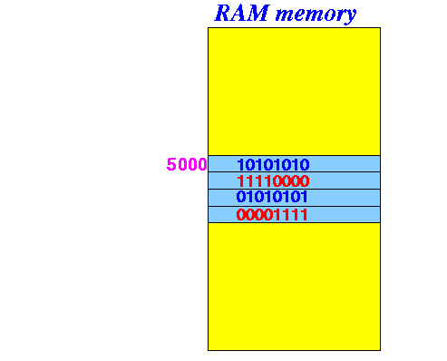

- Recall that:
- Operators operates on one or more operands (values) and return another value (kind of like a function)
- We will look at an very very unusual operator in the C/C++ programming language that is not usually found in most other high level programming languages...
- The reference operator &:
- The reference Operator & operates on a variable and returns the address of that variable
Example:
- Suppose the variable a
is stored (starting) at
memory address 5000:
 Then:
&a will evaulates to 5000
- C program that illustrates
the & operator:
/* ----------------------------------- Here are some (global) variables ----------------------------------- */ int i1, i2; short s1, s2; char c1, c2; float f1, f2; double d1, d2; int main(int argc, char *argv[]) { printf("Address of i1 = %u\n", &i1 ); // %u = unsigned integer printf("Address of i2 = %u\n", &i2 ); printf("Address of s1 = %u\n", &s1 ); printf("Address of s2 = %u\n", &s2 ); printf("Address of c1 = %u\n", &c1 ); printf("Address of c2 = %u\n", &c2 ); printf("Address of f1 = %u\n", &f1 ); printf("Address of f2 = %u\n", &f2 ); printf("Address of d1 = %u\n", &d1 ); printf("Address of d2 = %u\n", &d2 ); }Result:
Address of i1 = 134744 Address of i2 = 134748 (Notice: i2 located 4 bytes after i1) Address of s1 = 134752 Address of s2 = 134754 (Notice: s2 located 2 bytes after s1) Address of c1 = 134712 Address of c2 = 134713 (Notice: c2 located 1 bytes after c1) Address of f1 = 134736 Address of f2 = 134740 (Notice: f2 located 4 bytes after f1) Address of d1 = 134720 Address of d2 = 134728 (Notice: d2 located 8 bytes after d1)
- Example Program:
(Demo above code)

- Prog file: click here
How to run the program:
- Right click on link(s) and
save in a scratch directory
- To compile: gcc ref-op1.c
- To run: ./a.out